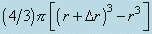

The
reader may wonder why the volume of the shell is not taken as:

the difference in volume between two concentric spheres. When this expression
for the volume is expanded, we obtain (4/3)p(3r2Dr
+ 3rDr2
+ Dr3)
and for very small values of Dr the terms
3rDr2
and Dr3
are negligible in comparison with 3r2Dr.
Thus for small values of Dr the two expressions
for the volume of the shell approach one another in value and when Dr
represents an infinitesimal increment in r they are identical.